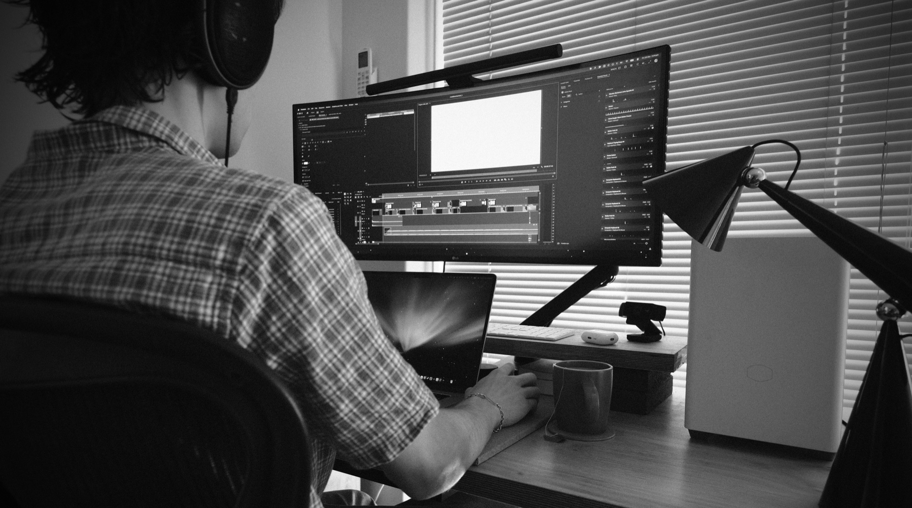

About me

Melbourne, Australia
Hey, I’m Thomas. I’m a video editor in my final year of a Bachelor of Design (Digital Media) at RMIT. I have high technical proficiency in Premiere Pro, After Effects and Illustrator, and I collaborate efficiently with others in both pre- and post-production, from scriptwriting and storyboarding to motion graphics, editing and sound. I adapt quickly to feedback and new ideas. My projects so far include app prototypes with product videos, an AI surveillance critique and an original electronic soundtrack.
Feel free to reach out, I’d love to get in touch!
Skills
- Filming video
- Scriptwriting & storyboarding
- Motion graphics
- Illustration, turned into motion graphics
- Brand storytelling
- Colour grading
- Sound design
- Adapting content for social media
- Collaborating across multiple tasks
Tools
- Premiere Pro
- After Effects
- DaVinci Resolve
- Final Cut Pro
- Photoshop
- Illustrator
- Figma
- REAPER
Experience
- 2022 – 2026Waiter, Hotel Phillip Island
Education
- 2023 – 2027Bachelor of Design (Digital Media), RMIT
- 2022 – 2023Bachelor of Information Technology, RMIT